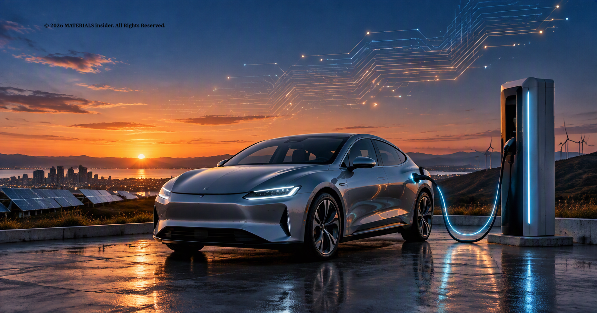
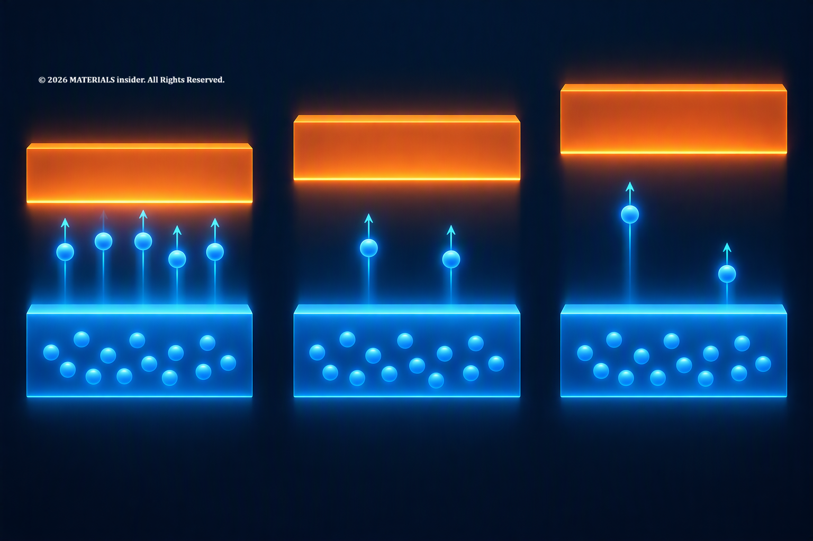
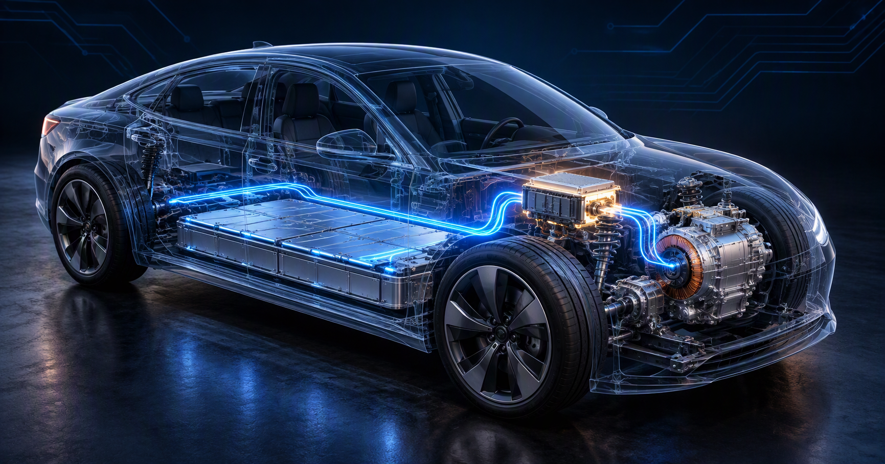
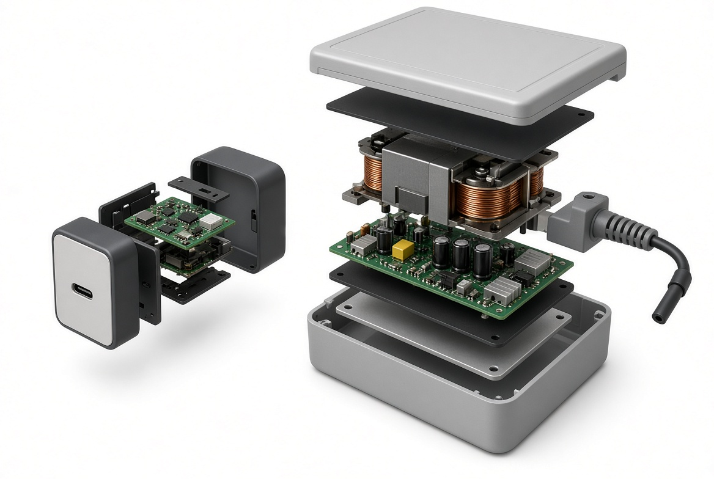
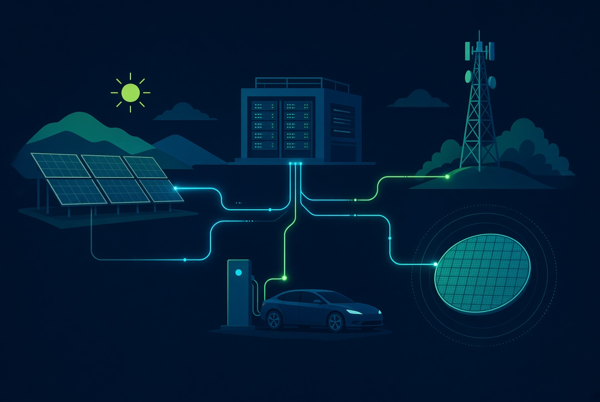

Silicon Carbide and Gallium Nitride: The Materials Powering the Next Generation of Electric Vehicles and Fast Chargers
Silicon carbide (SiC) and gallium nitride (GaN) are wide-bandgap semiconductors that waste less energy as heat than silicon. See what happens inside the crystal and where these materials are used in electric vehicles, chargers, solar inverters and 5G.
Every electric car hides a small act of translation. Between the battery and the motor sits an inverter, which chops direct current into the alternating current a motor needs, thousands of times a second. Each time a transistor switches, a little energy escapes as heat.
For decades, silicon handled that job. Now two newer semiconductors, Silicon Carbide (SiC) and Gallium Nitride (GaN), are taking over the hardest roles. Known as wide-bandgap semiconductors, and often called third-generation semiconductors, they are reshaping power electronics from electric vehicles to laptop chargers.

What “Wide-Bandgap” Means
The bandgap is the energy an electron needs to jump from the valence band, where it is bound to atoms, into the conduction band, where it can carry current. Silicon’s is about 1.1 electron volts (eV). Anything above 2 eV counts as wide-bandgap. 4H-SiC sits near 3.3 eV and GaN at 3.4 eV [1].
A wider gap helps twice. Heat knocks fewer electrons loose, so leakage stays low even in a hot device [1]. The crystal also survives a much stronger electric field before breaking down: about 2.2 MV/cm for 4H-SiC and 2.0 for GaN, against 0.29 for silicon [1]. That allows a thinner voltage-blocking layer, which means less resistance and less wasted energy [1].

Inside Silicon Carbide (SiC)
In SiC, each silicon atom shares electrons with four carbon atoms in a tetrahedral crystal. The layers can stack in different sequences, producing more than 250 polytypes. The 4H version is the one most used in power devices [1].
Its thermal conductivity, about 3.8 W/cm·K, is roughly two and a half times silicon’s, so heat escapes more easily [1]. The SiC MOSFET also keeps its on-resistance low at high voltage and has no tail current at turn-off, which lets it compete with silicon IGBTs [1]. By 2015, SiC diodes and MOSFETs rated from 600 to 1,700 V were in production [2].

Inside Gallium Nitride (GaN)
GaN pairs gallium with nitrogen, a light element that forms strong bonds [1]. Its signature feature is a heterostructure. Grow a thin layer of aluminum gallium nitride (AlGaN) on GaN, and the mismatch in conduction bands plus built-in polarization fields gather electrons into a sheet called a two-dimensional electron gas (2DEG) [1]. Electrons there meet few impurities, and their mobility reaches 1,200 to 2,000 cm²/V·s [1].
The resulting GaN transistor switches extremely fast. That lets designers shrink the inductors and capacitors that dominate a power supply, which is why compact chargers became possible.
There are catches. The 2DEG conducts with no gate voltage, so the bare device is “normally-on,” which is unsafe in converters. Makers add a p-type GaN layer under the gate to fix this [3][4]. Most GaN devices are also lateral, which limits blocking voltage compared with vertical designs [1]. So GaN tends to serve lower voltages and higher frequencies, while SiC covers the high-voltage end.

Where They Are Used
Electric vehicles. The traction inverter is SiC’s showcase. 800 V systems allow charging power up to 350 kW, and engineers have benchmarked 800 V inverters built with SiC MOSFETs directly against silicon IGBTs [5]. One 300 kW, 800 V SiC design reported a 2.85% reduction in power losses at 32 kW/L [6]. Even circuit layout matters. A modeling study found three-level SiC inverters cut vehicle energy use by 0.6 to 1.2% compared with a two-level layout [7]. These are small percentages, but in a car every percent is range.
Chargers and data centers. GaN’s speed suits compact power supplies. A paper from Virginia Tech and Efficient Power Conversion describes GaN-based 48 V converters for data centers with efficiency of 98% or more [8].
Solar. In a simulation of a residential inverter, SiC MOSFETs reduced total losses compared with silicon IGBTs [9].
5G. For base-station amplifiers, GaN is considered the best candidate for combining high output power, efficiency and back-off performance [10].

Challenges and Progress
SiC crystals are grown from vapor at very high temperatures, and defects are the enemy. Micropipes, once a major problem, have been largely solved. Stacking faults still cause degradation in bipolar devices, so industry favors unipolar designs [1]. Basal plane dislocations also degrade diodes and raise leakage in MOSFETs [11]. In one study of 100 mm 4H-SiC crystals, a longer cooldown (70 hours versus 40) produced more of them, because stress builds as the crystal cools [11].
GaN lacks affordable bulk crystals, so it is grown on silicon, SiC or sapphire [3]. On silicon, mismatched lattice spacing and thermal expansion nucleate defects and can crack the film. Buffer layers relax the strain [3]. Progress has been real. As of 2021, GaN-on-silicon was mainstream for power electronics, devices above 1,200 V had been demonstrated, and engineered substrates were improving crystal quality [3]. The reliability of p-GaN gates still needs intensive research [3].
Looking Ahead
Silicon will not vanish. SiC and GaN will take the jobs where their physics wins, while open questions remain, such as channel mobility in SiC MOSFETs and normally-off GaN designs [12]. As these mature, expect them to sit unseen inside more cars, chargers and servers.
Key Takeaways
- Wide-bandgap semiconductors tolerate stronger electric fields and higher temperatures than silicon.
- SiC suits high-voltage, high-power uses such as EV inverters.
- GaN suits fast-switching, compact designs such as chargers and RF amplifiers.
- Crystal defects and substrate mismatch remain the main manufacturing hurdles.
- Both materials are likely to complement silicon, not replace it.
References
- [1] Garrido-Diez, D., & Baraia, I. (2017). Review of wide bandgap materials and their impact in new power devices. 2017 IEEE International Workshop of Electronics, Control, Measurement, Signals and their Application to Mechatronics (ECMSM), 1–6. doi:10.1109/ECMSM.2017.7945876
- [2] Kimoto, T. (2015). Material science and device physics in SiC technology for high-voltage power devices. Japanese Journal of Applied Physics, 54, 040103. doi:10.7567/JJAP.54.040103
- [3] Hsu, L.-H., Lai, Y.-Y., Tu, P.-T., Langpoklakpam, C., Chang, Y.-T., Huang, Y.-W., Lee, W.-C., Tzou, A.-J., Cheng, Y.-J., Lin, C.-H., Kuo, H.-C., & Chang, E. Y. (2021). Development of GaN HEMTs fabricated on silicon, silicon-on-insulator, and engineered substrates and the heterogeneous integration. Micromachines, 12(10), 1159. doi:10.3390/mi12101159
- [4] Greco, G., Iucolano, F., & Roccaforte, F. (2018). Review of technology for normally-off HEMTs with p-GaN gate. Materials Science in Semiconductor Processing, 96–106.
- [5] Hain, S., Meiler, M., & Denk, M. (2019). Evaluation of 800V traction inverter with SiC-MOSFET versus Si-IGBT power semiconductor technology. PCIM Europe 2019, Nuremberg.
- [6] Gong, X. (2023). 800-V SiC traction inverter: key design considerations for improved efficiency and power density. PCIM Europe 2023. doi:10.30420/566091066
- [7] Taha, W., Nahid-Mobarakeh, B., & Bauman, J. (2021). Efficiency evaluation of 2L and 3L SiC-based traction inverters for 400V and 800V electric vehicle powertrains. 2021 IEEE Transportation Electrification Conference & Expo (ITEC), 625–632. doi:10.1109/ITEC51675.2021.9490082
- [8] Ahmed, M. H., Lee, F. C., Li, Q., de Rooij, M., & Reusch, D. (2019). GaN based high-density unregulated 48 V to x V LLC converters with ≥ 98% efficiency for future data centers. PCIM Europe 2019.
- [9] Alharbi, S. S., Alharbi, S. S., Bubshait, A., Alharbi, H., & Alateeq, A. (2025). Effects of wide bandgap devices on the inverter performance and efficiency for residential PV applications. Electronics, 14(6), 1061. doi:10.3390/electronics14061061
- [10] Gorre, P., Vignesh, R., Arya, R., & Kumar, S. (2020). A review of mm-wave power amplifiers for next-generation 5G communication. Advances in Intelligent Systems and Computing, 1154, 173–184. doi:10.1007/978-981-15-4032-5_18
- [11] Steiner, J., Roder, M., Nguyen, B. D., Sandfeld, S., Danilewsky, A., & Wellmann, P. J. (2019). Analysis of the basal plane dislocation density and thermomechanical stress during 100 mm PVT growth of 4H-SiC. Materials, 12(13), 2207. doi:10.3390/ma12132207
- [12] Roccaforte, F., Fiorenza, P., Lo Nigro, R., Giannazzo, F., & Greco, G. (2018). Emerging trends in wide band gap semiconductors (SiC and GaN) technology for power devices. Microelectronic Engineering, 187, 66–77.
Cold Gas Thrusters: How Tesla’s Roadster Uses Compressed Air Instead of Fire
Cold gas thrusters use compressed inert gas to create thrust without combustion. See how Tesla demonstrated this technology on the next-generation Roadster and what happens at the molecular level.
Read Full Article →
CCD Chips: Silicons That Turned Photons into Perfect Digital Eyes
CCD chips convert photons into electrons via the photoelectric effect in silicon, powering digital cameras, space telescopes, and X-ray detectors with near-perfect quantum efficiency and ultra-low noise.
Read Full Article →Share this article: